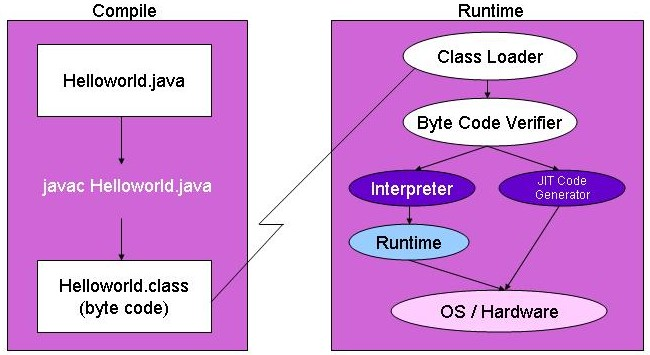

Table of Contents
C++ was the latest Object-Oriented (OO) programming language prior to 1995. C++ with the structured heritage contained pointers, memory management, rarely used, poorly understood, confusing features that outweighed the benefits. Java was built so that programming was easy without having to completely relearn a programming language and without the flaws of C++ language.
Some Java concepts that make the language easier is no more header files. These were files that were inconsistent with the C++ program files. The preprocessor directive was removed. Compiling is as simple as javac *.java, no more complicated make files. The largest contribution that makes Java simple was the removal of the pointer.
Object-Oriented Design (OOD) focuses on encapsulating data, information hiding and providing access only through interfaces. OO enables systems engineers, developers and clients to think in real world terms. OO also enables development to occur faster through reuse and easily solve the problem instead of being the problem.
Java has an extensive library of network classes, primarily in the java.net package. These classes make programming TCP/IP protocols (HTTP, FTP) and creating network sockets easily possible. Java's own network protocol is the Remote Method Invocation (RMI) Application Programming Interface and can use open standards like the Common Object Request Broker Architecture (CORBA) to distribute or use distributed object.
Java was written so that programs are reliable, flexible and the issues and problems of other languages were eliminated. C++ has pointers, implicit declarations and structured programming hooks. Java adds a layer of abstraction to make these hard to conceptualize ideas into a flexible architecture. Pointers mentioned before have been removed from the developer but having access to memory or objects are easily obtained. Java is not the total answer to writing bug free code but enables development in the right direction.
Java was developed for the networked/distributed environment, thus the programming language has to be secure. Java provides several layers of security that protect against malicious code and viruses while at the same time enabling clients to perform operations. Java Applets, Servlets or Enterprise programs enable developers to write code that executes on client systems without allowing access to client resources.
The Java Virtual Machine (JVM) is an architecture specific program that interprets Java Compiled code. The Java Compiler (javac) generates an architecture neutral object file format called bytecode which has the extension "class". The class file can be executed on any platform with the JVM performing the interpretation. This enables software developers to write code on any given platform and execute on all platforms.
Java sets specific sizes of primitive data types. Other programming languages can define a primitive data type according to the hardware, e.g. an integer could be 2, 4 or 8 bytes, compared to Java which is consistently 4 bytes. Java also specifically specifies how operations are handled. With strict standards followed and the JVM, Java programs are portable.
The JVM interpreter executes Java bytecode on any platform of which the JVM was ported. This is Java's strength because this provides the portability of the language. This is also believed by many to be a drawback to Java. Interpreted languages are much slower than compiled languages.
Interpreted bytecode is usually adequate for most clients. However with all the great fundamental pluses that Java gave to the computing community, performance was being demanded from both developers and clients. Java now has the Just In Time Compiler (JIT) which increases performance by translating bytecode at run time into machine code for a particular platform. Java also includes thread technology that is easily usually to use for parallel processing.
Multithreading (lightweight processes) enable a single program to perform multiple operations at the same time causing better interactive responsive and realtime behavior. Java specific implementations are available in the language, java.lang.Thread. Threads are also easy to set up compared to other languages.
Java is very dynamic compared to several programming languages in the industry. A Java class can be downloaded as an Applet in any browser and execute. A Java class can also be executed on any platform that is executing the JVM. The Java class file can dynamically loaded and examined at runtime using Java's Reflection API.
Enterprise JavaBeans (EJBs) technology a definition and sold as a unique product enables platform providers and enterprise developers of middleware components that are transactional, scalable and portable. Enterprise JavaBeans servers reduce the complexity of developing middleware by providing automated tools through Graphical User Interfaces (GUIs) so that enterprise systems can be configured. Some features of EJBs are transaction databases, database connectivity, security and more.
JDBC technology is an API that enables Java applications accessibility to most tabular data sources including Software Query Language (SQL) Relational Databases, spreadsheets or flat files.
JNDI provides Java applications with a unified interface to multiple naming and directory services in the enterprise. Lightweight Directory Access Protocol (LDAP), Common Object Request Broker Architecture (CORBA), Remote Method Invocation (RMI), file systems are just a few technologies that are available through JNDI.
JavaServer Pages (JSP) allow web developers and designers to rapidly develop dynamic front end web pages. JSP separates the user interface from content generation enabling designers to change the overall page layout without altering the underlying dynamic content. JSP uses XML tags and scriptlets (Java code within an HTML file) that encapsulate the logic, generating the content for the page. JSP is an extension of Java Servlet technology.
Remote Method Invocation (RMI) enables the programmer to create distributed Java technology-based applications, in which the methods of remote Java objects can be invoked from other Java virtual machines on different hosts. A Java technology-based program can make a call on a remote object once it obtains a reference to the remote object, either by looking up the remote object in the bootstrap naming service provided by RMI or by receiving the reference as an argument or a return value.
A client can call a remote object on a server, and that server can also be a client of other remote objects. RMI uses object serialization to marshal and unmarshal parameters and does not truncate types, supporting true object-oriented polymorphism.
Remote Method Invocation (RMI) over the Internet Inter-Orb Protocol (IIOP) delivers Common Object Request Broker Architecture (CORBA) distributed computing capabilities. RMI over IIOP combines the best features of RMI and CORBA.
Java 2 Enterprise Edition (J2EE) is a standard for developing and deploying enterprise applications. J2EE encapsulates several Java technologies into one coherent architectures. J2EE contains Enterprise JavaBeans (EJB), JavaServer Pages (JSP), Java Servlets, J2EE Connector Architecture, Java API for XML Parsing (JAXP), Java Authentication and Authorization Service (JAAS) API, Java Message Service (JMS) API and Java Naming and Directory Server (JNDI) and much more.
Swing is one set of program components of the Java Foundation Classes (JFC) which contains additional Graphical User Interface (GUI) tools. The first release of Java used the Abstract Windowing Toolkit (AWT) which had native code for the GUI. Swing components are written in pure Java.
eXtensible Markup Language (XML) is the World Wide Webs (W3C) open architecture for formatting and validating data. XML itself is the framework of which other technologies build upon. XML has several different technologies, eXtensible Stylesheet Language (XSL/XSLT), Scalar Vector Graphics (SVG), Document Object Model (DOM) to name a few. XML is the preferred technology in many information-transfer scenarios because information is easy to read, process, generate, adheres to strict standards, open source and free.
Java's Software Development Kit (JDK) has a default directory structure. The bin directory contains all the executables, e.g. java, javac, javadoc. The demo directory contains demonstration programs. The docs directory is where you should unload the JDK documentation (javadoc). The jre (Java Runtime Environment) directory contains the files to execute Java. The lib directory contains any Java Archives (jar files) or library files.
The environment variables PATH and CLASSPATH need to be defined before executing your Java programs. PATH should set up the path to the executables. CLASSPATH should set up the path to the class files.
set PATH=%PATH%;c:\jdk1.3\bin;. set CLASSPATH=%CLASSPATH%;c:\java\programming;.
The javac (Java Compiler) command compiles Java source code into Java bytecode. Java source code has the extension "java" and java bytecode have the extension "class". The following example is how to compile the Helloworld source code, e.g. javac Helloworld.java, note that the extension .java has to follow the class name.
The java (Java Interpreter) command executes Java bytecode created by the Java compiler (javac). The java command expects the bytecode for the class to be in a file called ClassName.class. All bytecode have the extension "class". The following example is how to execute the Helloworld program, e.g. java Helloworld, note that the extension "class" is not included.
The Java Virtual Machine (JVM) interprets the bytecode that was created when compiled with the javac (java compiler). The JVM is an abstract layer of code between the operating system and java byte code so that developers only need to be concern with the Java program and not the operating system. This abstract layer is specific to the hardware.
Figure 2.1. Java Virtual Machine

The Java programming language allows developers to create objects with constructors just like other OO programming languages. However the destructor like in C++ language is not in Java and the developers don't have to worry about managing memory. The C++ language you were responsible both constructing and destructing objects. The Garbage Collection (GC) mechanism automatically detects objects that are no longer referenced and removes them from memory.